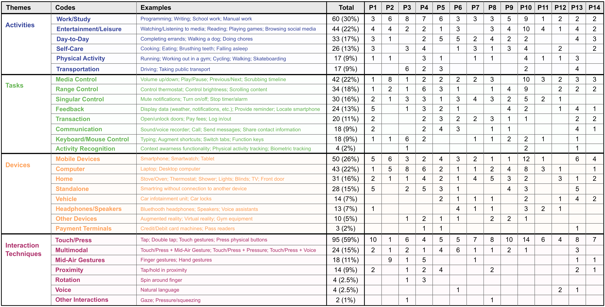

This interactive visualization allows you to highlight connections between themes and codes, and complements Figure 3 of our paper One Ring to Rule Them All: An Empirical Understanding of Day-to-Day Smartring Usage Through In-Situ Diary Study. To interact, either choose an order from the dropdown below or hover over the colored nodes. Hovering on a colored node allows you to see the connections between that node and any others, as reported within our participants entries. The thickness of an arc represents the count of a specific connection reported, from the highlighted node to the node at the end of the arc. Table 2, from our paper, is added below to provide examples of each code for better understanding during your exploration. To reduce the complexty, all singleton responses were removed.
View the source code for this visualization here.
Order: 